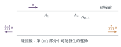

STEP II 1990，第 14 題
繼續之前，請先閱讀題目（原題為英文）。題目載於 STEP Support Programme 的題目資料庫： step.maths.org/questions/90-s2-q14
引子
把牛頓擺（Newton’s cradle）的一個球拉開，然後放手：另一端會有一個球飛出。拉開兩個，就有兩個飛出。為甚麼？為甚麼不是一個球以兩倍速率飛出，或者三個球以三分之二的速率飛出？這兩種情況的動量同樣正確。
答案要從力學的兩大守恆定律（conservation laws）說起。動量（momentum）與能量（energy）合起來所施加的限制，遠比其中任何一個單獨施加的嚴格得多，你想像得到的結果大多會被它們排除。本題把這兩條定律用作約束條件（constraints）：不是用來計算會發生甚麼，而是用來判斷甚麼可以發生。把守恆定律看成每一個可能結果都必須遵守的規則，這種想法貫穿整個物理學。
動筆之前
一粒質量為 \(m\) 的彈珠以速率 \(u\) 運動，撞上一粒質量為 \(M\) 的靜止彈珠，而動能（kinetic energy）守恆。碰撞後兩者的速度是多少？若 \(M = m\) 又如何？
設碰撞後的速度為 \(p\) 和 \(q\)。由動量得 \(mp + Mq = mu\)，由能量得 \(mp^2 + Mq^2 = mu^2\)。把這兩式寫成 \(m(u - p) = Mq\) 和 \(m(u - p)(u + p) = Mq^2\)，然後相除，得 \(u + p = q\)。於是 \[p = \frac{m - M}{m + M}\,u, \qquad q = \frac{2m}{m + M}\,u.\] 當 \(M = m\) 時，第一粒彈珠停下，第二粒以速率 \(u\) 離開：兩者只是交換了速度。這就是質量相等的彈珠能把運動沿着隊列傳遞下去的原因。
逐步解題
階段 1 只有最後兩粒運動
假設碰撞後只有 \(A_n\)（速度 \(p\)）和 \(A_{n+1}\)（速度 \(q\)）運動。寫出守恆定律。哪一粒彈珠的運動限制了 \(p\) 的正負號？
由動量和能量得 \[mp + \lambda mq = mu, \qquad \tfrac12mp^2 + \tfrac12\lambda mq^2 = \tfrac12mu^2.\] 這正是質量為 \(m\) 的彈珠撞上質量為 \(\lambda m\) 的彈珠時的方程，所以（除了 \(p = u\)、\(q = 0\) 這個解之外，而該解需要 \(A_n\) 穿過 \(A_{n+1}\)） \[p = \frac{1 - \lambda}{1 + \lambda}\,u, \qquad q = \frac{2}{1 + \lambda}\,u.\] 若 \(\lambda < 1\)，兩者皆為正，且 \(p < q\)：\(A_n\) 跟在 \(A_{n+1}\) 後面，但走得較慢，所以兩者分開，一切並無矛盾。若 \(\lambda > 1\)，則 \(p < 0\)：\(A_n\) 向後運動。但 \(A_{n-1}\) 靜止在它的正後方，並與它接觸，而 \(A_n\) 不能穿過它。所以這種運動不可能發生。■
階段 2 三粒彈珠
現在假設只有 \(A_{n-1}\)、\(A_n\) 和 \(A_{n+1}\) 運動，速度分別為 \(a\)、\(b\)、\(c\)。已知哪些彈珠靜止、哪一粒在哪一粒後面，\(a\)、\(b\)、\(c\) 必須滿足甚麼不等式（inequalities）？
彈珠 \(A_{n-2}\) 靜止在 \(A_{n-1}\) 後面（它確實存在，因為 \(n \geq 3\)），所以 \(a \geq 0\)。而且沒有彈珠可以越過前面的那一粒，所以 \(a \leq b \leq c\)。合起來就是 \(0 \leq a \leq b \leq c\)。守恆定律為 \[a + b + \lambda c = u, \qquad a^2 + b^2 + \lambda c^2 = u^2.\]
把動量方程平方，再與能量方程比較。剩下甚麼？
平方後，\(u^2 = a^2 + b^2 + \lambda^2c^2 + 2ab + 2\lambda ac + 2\lambda bc\)。減去能量方程， \[0 = \lambda(\lambda - 1)c^2 + 2ab + 2\lambda c(a + b).\] 由於 \(\lambda > 1\) 且 \(a, b, c \geq 0\)，右邊每一項都非負，所以每一項都等於零。特別地，\(c = 0\)，於是 \(0 \leq a \leq b \leq c\) 迫使 \(a = b = 0\)。但這樣總動量就是 \(0\)，而不是 \(mu\)。矛盾：這種運動不可能發生。■
留意這個論證的結構。把動量方程平方會產生 \(2ab\) 之類的交叉項（cross terms），而能量方程卻沒有這些項。兩者之差量度了運動有多「分散」。當 \(\lambda > 1\) 時，同一個論證可以排除只有 \(A_k, \ldots, A_{n+1}\) 以非負速度運動的任何結果，你看得出原因嗎？
階段 3 兩粒可以運動的彈珠
向前運動的彈珠必須全部位於遠端，而這種情況既然行不通，也許有一粒彈珠是向後運動的。哪一粒彈珠可以自由地向後運動？
只有 \(A_0\) 的後面沒有任何東西。不妨試試：\(A_0\) 以速度 \(p\) 運動（可能是負數），\(A_{n+1}\) 以速度 \(q\) 運動，其餘全部靜止。守恆定律再次與質量為 \(m\) 和 \(\lambda m\) 的兩個物體碰撞時相同，所以 \[p = -\frac{\lambda - 1}{\lambda + 1}\,u, \qquad q = \frac{2}{\lambda + 1}\,u.\] \(A_0\) 反彈，\(A_{n+1}\) 向前運動，中間的彈珠保持靜止，一切並無矛盾。這就完全像是 \(A_0\) 直接撞上了 \(A_{n+1}\)，而中間那一列相等的彈珠充當了完美的信差。■

回顧
以守恆定律作為約束條件。我們從來沒有仔細追蹤每一次碰撞，只是問：動量、能量和幾何條件容許哪些結果？
物理上的不等式十分重要。「彈珠不能互相穿過」給出了不等式 \(0 \leq a \leq b \leq c\)，而排除第 (i) 和第 (ii) 部分的，正是這些不等式，而不是守恆定律。
平方後相減。把動量的平方與能量比較，會得出一個由交叉項組成的和，而這個和必須等於零。
背後的數學
為甚麼只有一個球飛出
在由相等的球組成的牛頓擺中，假設有 \(k\) 個球以速率 \(w\) 一起離開。由動量得 \(kw = u\)，由能量得 \(kw^2 = u^2\)。兩式相除，得 \(w = u\) 及 \(k = 1\)。所以在離開的球一起運動的各種結果之中，只有「一個球以原來的速率離開」同時符合兩條定律。兩個球以一半速率離開，動量正確，但能量只有一半；一個球以兩倍速率離開，則只有當它是半個球時動量才正確。
但問題並未就此解決。若有 \(n\) 個球，就有 \(n\) 個未知的速度，而守恆定律只有兩條，所以同時符合兩者的結果有無窮多個（試找出一個三個球以不同速率運動的結果）。實際出現哪一個，取決於各球在接觸期間如何變形。1980 年代初，Frank Herrmann 和他的同事證明，我們熟悉的現象有賴於衝擊沿着隊列傳遞時不會擴散開去，而堅硬的鋼球之間留有極小空隙時正是如此。若用軟球，或者把球緊緊壓在一起，牛頓擺的表現就沒有那麼乾淨利落；仔細的量度更顯示，其他的球總會稍為移動。
守恆定律與對稱
守恆定律從何而來？1918 年，諾特（Emmy Noether）證明了一條定理，它是現代物理學的基石之一：物理系統的每一種連續對稱（continuous symmetry），都對應一個守恆量（conserved quantity）。如果物理定律在這裏與在左邊一米處相同（空間平移對稱），動量就守恆。如果物理定律今天與明天相同（時間平移對稱），能量就守恆。如果物理定律在每個方向都相同（旋轉對稱），角動量（angular momentum）就守恆。你會在大學二年級的拉格朗日力學（Lagrangian mechanics）課程中學到諾特定理（Noether’s theorem）；本章自始至終都在運用它的推論。
1668 年，英國皇家學會（Royal Society）徵求物體碰撞問題的解答。沃利斯（John Wallis）處理了非彈性碰撞（inelastic collisions），而雷恩（Christopher Wren）和惠更斯（Christiaan Huygens）則各自獨立地解決了彈性（elastic）的情況。惠更斯的關鍵洞見是轉換參考系（frame）：在一艘隨質心（centre of mass）運動的船上觀察碰撞，這時兩個相等的球只是以相反方向、原來的速率彈回，然後再變換回岸上的觀點。他還注意到某一個量，即各質量乘以速率平方之和，在碰撞前後相同；不過要再過一個世紀，動能本身才被確認為一個守恆量。
思維技巧
當一個過程複雜得無法追蹤時，列出不會改變的量，看看它們容許哪些結果。
物理學家正是這樣推斷粒子加速器中的碰撞：當中相互作用的細節並不清楚，但動量、能量和電荷必須平衡。再配合一個不等式（這裏是彈珠不能互相穿過），就可以證明某個結果不可能發生。
延伸練習
同一個問題再現。試做 STEP I 2006，第 11 題：槽中有一列粒子，末端是較重的一粒。哪些最終狀態是可能的？
追蹤各次碰撞。把第 (iii) 部分的撞擊看成一連串獨立的兩粒彈珠碰撞，由 \(A_0\) 撞上 \(A_1\) 開始。逐步追蹤這一連串碰撞，並證明最後得到的正是第 (iii) 部分所求得的運動。
兩個球撞入。在一個由五個相等的球組成的牛頓擺中，兩個球同時釋放，以速率 \(u\) 撞上其餘三個。證明「兩個球以速率 \(u\) 離開」與兩條守恆定律並無矛盾，並找出另一個同樣符合的結果。
末端較輕。若 \(\lambda < 1\)，追蹤一連串的兩粒彈珠碰撞。除了 \(A_n\) 和 \(A_{n+1}\) 之外，最後還有其他彈珠在運動嗎？
延伸閱讀
David Morin, Introduction to Classical Mechanics（Cambridge University Press），第 5 章。動量守恆與能量守恆，附有大量關於碰撞的習題。
Frank Herrmann & Peter Schmälzle, “Simple explanation of a well-known collision experiment”，American Journal of Physics 49 (1981)。解釋牛頓擺為何行得通。
Dwight Neuenschwander, Emmy Noether’s Wonderful Theorem（Johns Hopkins University Press）。深入淺出地講述對稱與守恆之間的聯繫。